Por dentro do Obby da Fé
Prints de conversas com clientes.

Depois disso, a Coleção Completa volta para R$ 37,90.
Quero as +500 páginasFases, checkpoints e recompensas para imprimir. Ele faz a missão primeiro e joga depois. E é ele quem pede.
Com Deive Leonardo“Ensina a criança no caminho em que deve andar, e, ainda quando for velho, não se desviará dele.”PROVÉRBIOS 22.6
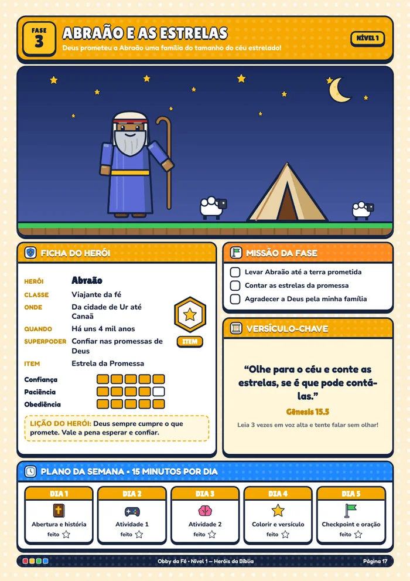
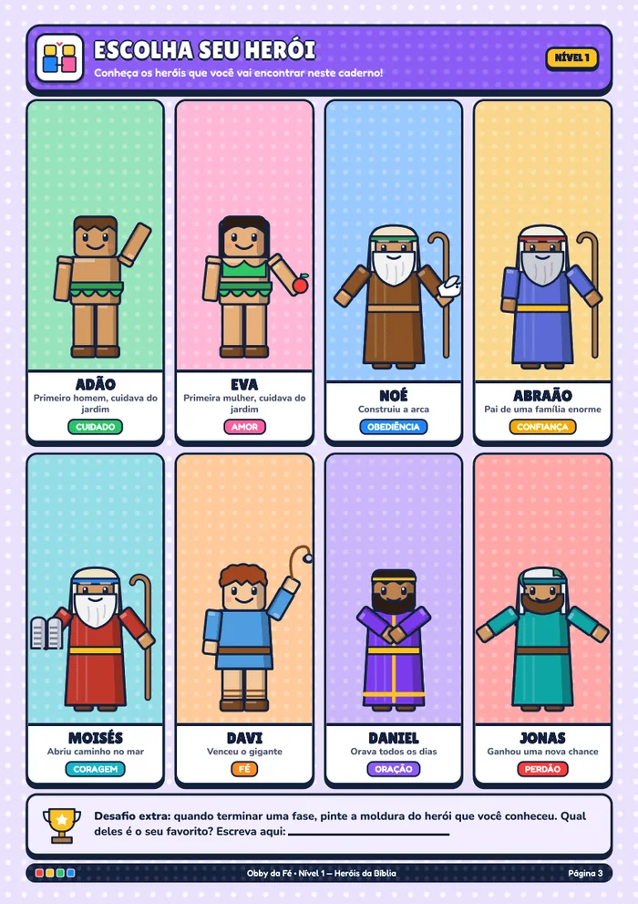
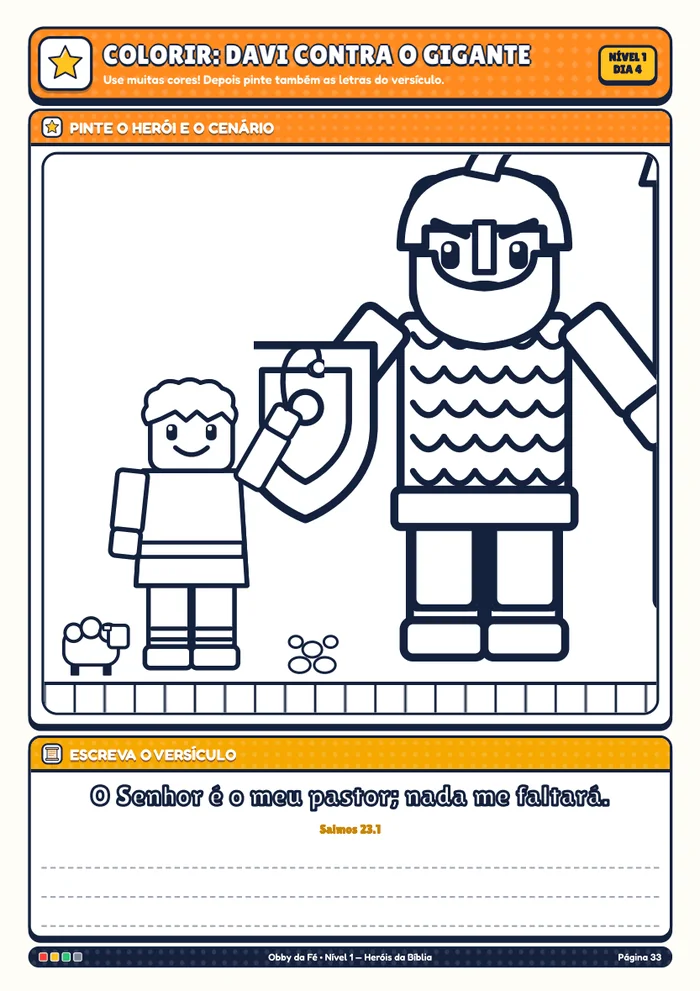
3 cadernos porR$ 19,90
Quero imprimir hoje Pagamento único por Pix ou cartão · PDF no seu e-mailRoteiro pronto para a semana. Imprimiu, aplicou. Uma fase por semana rende de 4 a 5 meses de conteúdo.
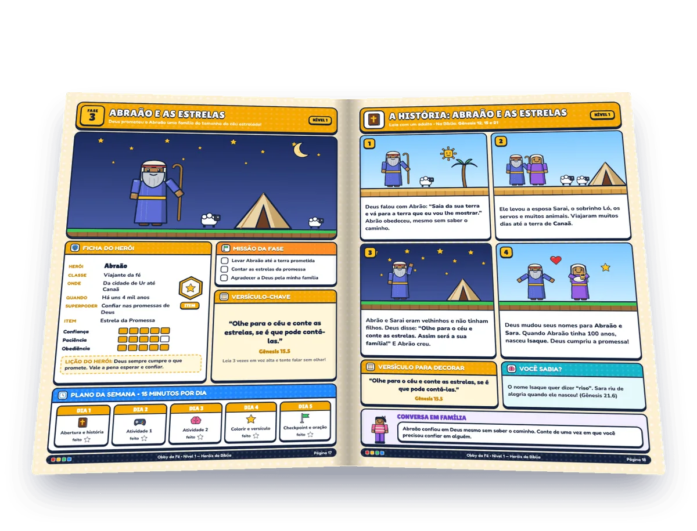
Fase 3 do Nível 1: Abraão e as estrelas
Labirinto, código secreto, caça-palavras, desenho, quiz e cartões. Atividade que parece jogo, porque foi feita para isso.
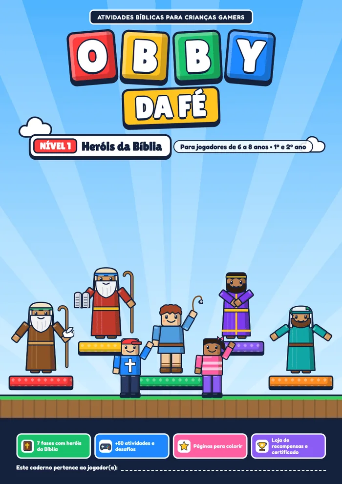
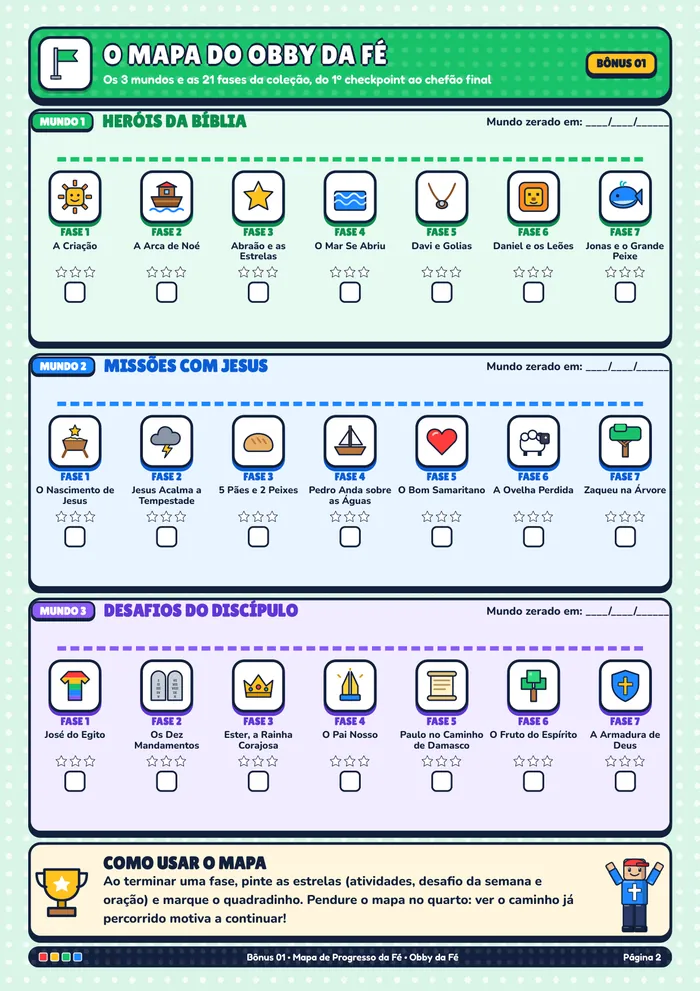
Só na Coleção Completa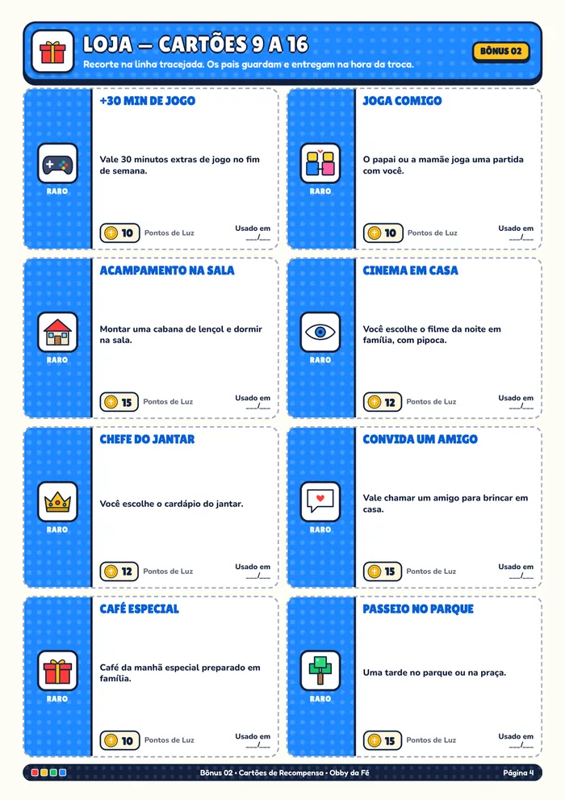
Só na Coleção Completa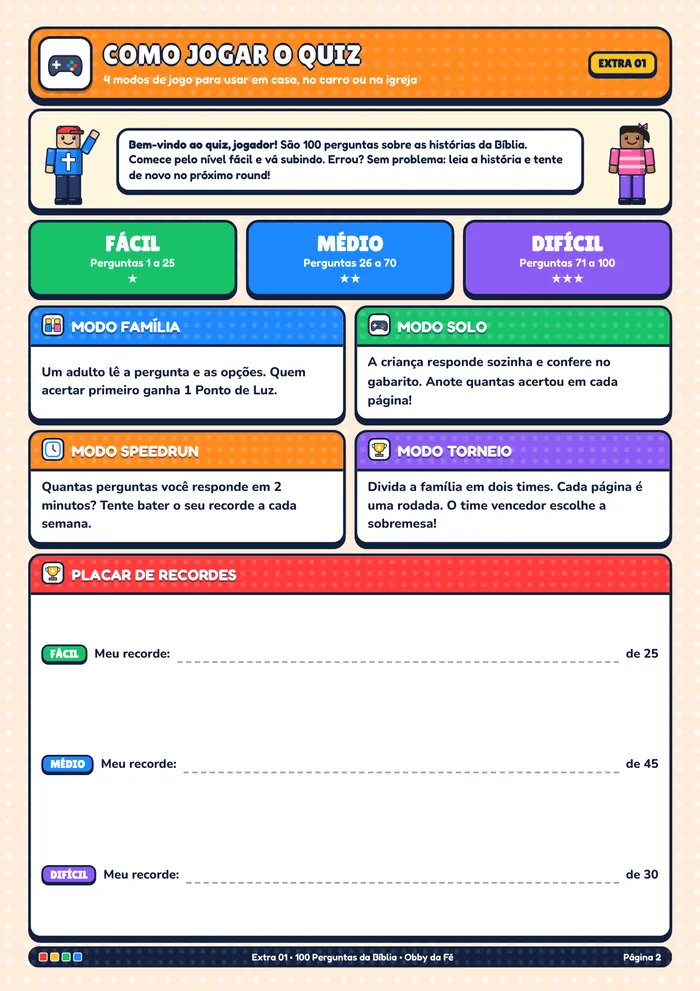
Só na Coleção Completa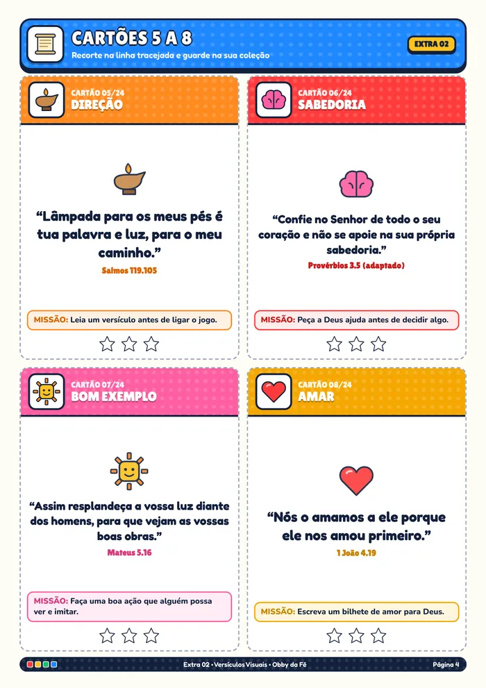
Só na Coleção Completa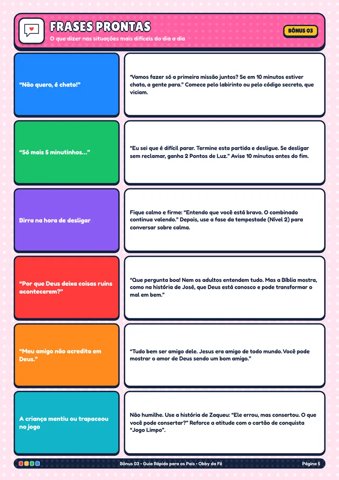
Só na Coleção Completa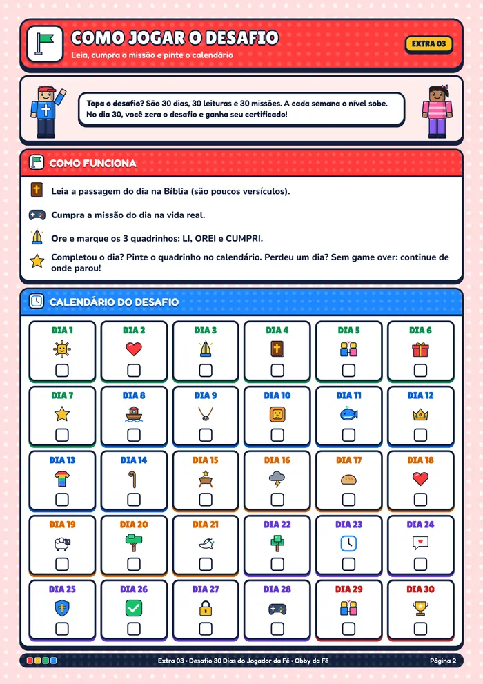
Só na Coleção CompletaCada caderno tem 7 fases e dura cerca de 7 semanas.
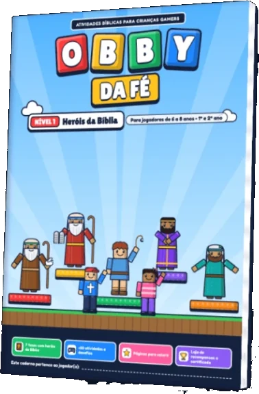
Da Criação a Jonas. Leitura curta, labirinto, contagem e desenho. Funciona até para quem ainda não lê bem.
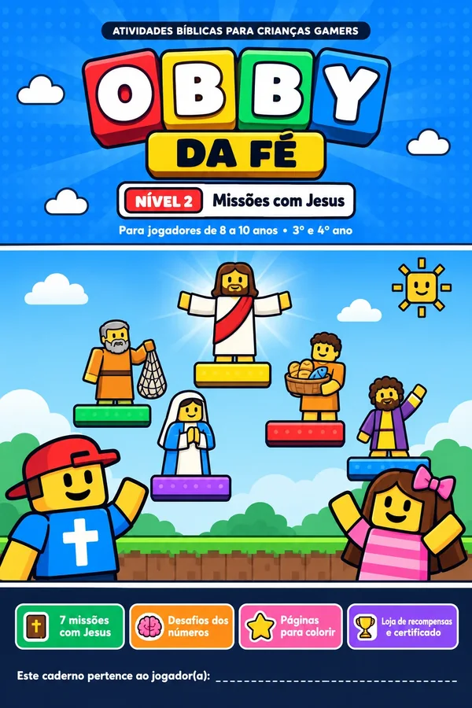
Do nascimento de Jesus a Zaqueu na árvore. A tempestade, os pães e peixes, a ovelha perdida.
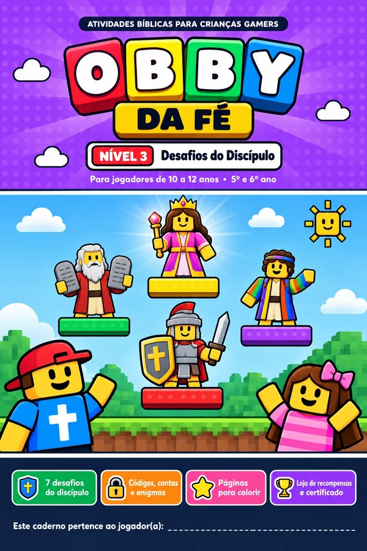
De José do Egito à Armadura de Deus. Caráter, coragem e o que fazer quando ninguém está olhando, inclusive no chat do jogo.
Os 3 cadernos vêm juntos em qualquer plano.
SOBRE DEIVE LEONARDO
Evangelista e comunicador cristão, referência em mensagens de fé e esperança.
Com uma linguagem simples e inspiradora, Deive Leonardo leva mensagens sobre Jesus, fé e propósito a milhões de pessoas. Sua comunicação aproxima diferentes gerações da Palavra de Deus, incentivando uma vida guiada pelo amor, pela esperança e pelos valores cristãos.
Prints de conversas com clientes.
Juntos valem R$ 127,10. Na Coleção Completa, saem de graça.

Os 3 mundos e as 21 fases num mapa para o quarto. Ver o caminho faz ele querer a próxima fase.

Do comum ao lendário: noite da pizza, cinema em casa, joga comigo. Ele junta pontos sem você mandar.

Rotina pronta, Acordo de Tempo de Tela para assinar, frases para o "só mais 5 minutinhos" e alertas on-line.

Quiz em 3 níveis e 4 modos: Família, Solo, Speedrun e Torneio. Para o jantar, o carro e a igreja.

Cada cartão com uma missão. A regra mais simples da casa: falou o versículo, liberou o jogo.

Uma leitura e uma missão por dia. Sem game over: perdeu um dia, continua de onde parou. Certificado no dia 30.
Uma única skin de jogo custa mais que essa coleção inteira, e some quando ele enjoar. Na Coleção Completa são +500 páginas que você imprime quantas vezes quiser para a sua família.
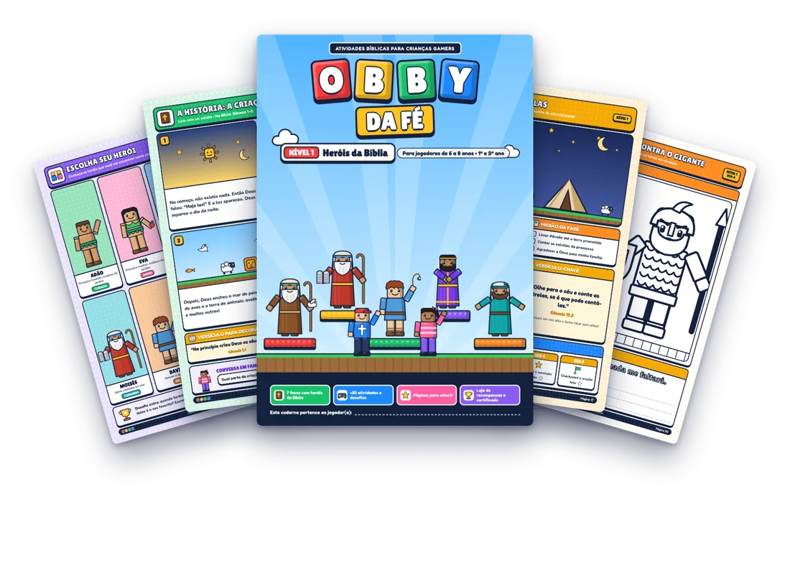
Os 3 cadernos para imprimir
Só R$ 8 a mais que o Básico, e você leva a loja de prêmios, o acordo de tela e mais 7 bônus.
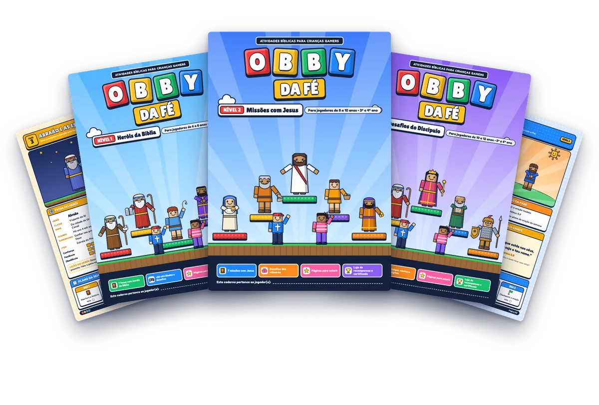
+500 páginas: os 3 cadernos e os 9 bônus
Pagamento seguro por Pix ou cartão
Baixe, imprima e aplique a primeira fase com seu filho. Se em 7 dias você achar que não é para a sua família, é só pedir e você recebe 100% do valor de volta, sem perguntas.
De 6 a 12 anos, em 3 cadernos por idade. Tem filhos de idades diferentes? Cada um usa o caderno do seu nível. A conversa em família é a mesma.
Serve. Comece pelo Nível 1 e leia junto. Labirinto, contagem e desenho não exigem leitura.
Pode, quantas vezes quiser, para uso da sua família. Preto e branco também funciona.
Só 15 minutos. E não precisa imprimir tudo de uma vez: imprima só a fase da semana. Uma fase por semana rende de 4 a 5 meses de conteúdo.
Sim. É baseado na Bíblia e serve para famílias católicas e evangélicas.
Não. O visual de blocos é original. Não usamos marca, logo ou moeda de nenhum jogo. Só falamos a língua que seu filho já entende.
Não. Cada fase traz a história resumida, a referência e o gabarito.
Assim que o pagamento é aprovado, o link chega no seu e-mail. No Pix, é na hora.
Daqui a 5 meses, seu filho vai ter passado muitas horas no jogo. Isso você não controla. O que você controla é se, nesses mesmos 5 meses, ele vai ter jogado 21 fases da Bíblia, decorado 24 versículos e zerado um desafio de 30 dias com Deus.
Quero as +500 páginasA regra começa hoje: primeiro a missão, depois o jogo. Imprima a Fase 1 agora e veja a reação dele amanhã. Se não gostar, você tem 7 dias para pedir o dinheiro de volta.